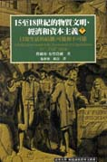

顯示查詢結果 ( 找到 7 筆 )
| 全選 | 書名 | 作者 | 出版者 | 日期 | |
|---|---|---|---|---|---|
| 1 | 15至18世紀的物質文明、經濟和資本主義. 卷二, 形形色色的交換 | 費爾南.布勞岱爾(Fernand Braudel)著; 施康強, 顧良譯 | 廣場 | 107/05 | |
| 2 | 15至18世紀的物質文明、經濟和資本主義. 卷二, 形形色色的交換 | 費爾南.布勞岱爾(Fernand Braudel)著; 施康強, 顧良譯 | 廣場 | 107/05 | |
| 3 | 15至18世紀的物質文明、經濟和資本主義. 卷二, 形形色色的交換 | 費爾南.布勞岱爾(Fernand Braudel)著; 施康強, 顧良譯 | 左岸文化 | 107/05 | |
| 4 | 15至18世紀的物質文明、經濟和資本主義. 卷二, 形形色色的交換 | 費爾南.布勞岱爾(Fernand Braudel)著; 施康強, 顧良譯 | 左岸文化 | 107/05 | |
| 5 | 15至18世紀的物質文明、經濟和資本主義. 卷二, 形形色色的交換 | 費爾南.布勞岱爾(Fernand Braudel)著; 施康強, 顧良譯 | 左岸文化 | 107/05 | |
| 6 | 15至18世紀的物質文明、經濟和資本主義. 卷二, 形形色色的交換 | 費爾南.布勞岱爾(Fernand Braudel)著; 施康強, 顧良譯 | 左岸文化 | 107/05 | |
| 7 |  | 15至18世紀的物質文明、經濟和資本主義 | 費爾南.布勞岱爾(Fernand Braudel)著; 施康強, 顧良譯 | 貓頭鷹 | 107/05 |